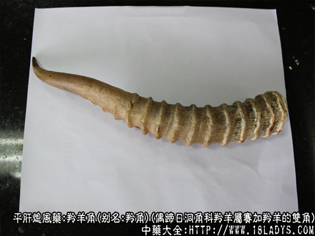

本品为常用中药。始载《神农本草经》，列为上品。历代《本草》记述的羚羊名称不一，有羚羊、羱羊和山驴等，又有两角一角之分，国内多处有产，看来品种甚多，至解放前商品中尚有青条羚羊和羚羊之分，现只剩羚羊一种。
别名：羚角。
来源：本品为偶蹄日洞角科羚羊属赛加羚羊的双角。野生或饲养，为进口品羚羊角。
产地：主产于俄罗斯，蒙古人民共和国。据说我国沿中俄，中蒙边界地区有产，但未见提供商品。
性状鉴别：本品呈圆柱形，略作弓背形弯曲，全长20～35厘米，基部圆形或卵圆形，直径约3～4.5厘米，上部渐细尖，尖向内侧扭曲。全体有细密的纵顺纹理。由基部起有突起的脊状波浪式环节10～20余个，约占角长的3/4，其余1/4仍有不太明显用手触摸可以感到的环节，环节基部稍密，中上部略疏，间隙约一指，握之合把。全体淡黄白色，光滑如玉。基部略带紫色，中上部有血斑或血线透于体外。尖部个别带黑色。基部色壳内有骨质角塞，约占角长的1/3～1/2重量约占4/10，呈圆锥形，略向后弯曲，表面具纵向的骨棱和凹沟（血槽）多条，与角内壁的棱凹相卡。角塞顶端的角壳中心，有一扁三角形小孔，通达尖端，但不露于尖角之外，俗称“通天眼”（神经孔）。质坚硬，不易折断。气无、味淡。
以支条均匀，质嫩，无裂痕，色黄白光润，带血斑血线者为佳。
主要成分：含角质蛋白、磷酸钙、不溶性无机盐，并含少量维生素A。
药理作用：清热解毒，平肝熄风，其原理为：
（1）解热。动物实验证实有解热作用。
（2）镇静。有抗惊厥作用。
炮制：除去骨塞，镑片或磨成细粉。生用。
性味：咸、寒。
归经：入心、肺、肝经。
功能：平肝熄火，清热解毒。
主治：高热神昏，谵语发狂，惊痫抽搐，目赤肿痛等症。
临床应用：为治疗高热神昏、抽搐之要药。
（1）治疗热性抽搐，尤其患感染性疾病引起的高热抽搐。本品能清热止痉，一般配钩藤、生地、菊花等，方如羚羊角钩藤汤。
孕妇子宫之抽搐表现阴不足者，也可用羚羊角，配酸枣仁、麦冬、桑寄生、阿胶、牡蛎等，方如羚羊角散加减。
（2）治疗肝火升扰而致的眼珠胀痛、头晕头痛、视物昏花、拌有恶心呕吐（可见于青光眼），用羚羊角取其有镇静作用、常配车前子、黄芩、玄参、知母、茯苓、防风、细辛等。
使用注意：
（1）与犀角比较：论清热解毒，犀角比羚羊角好；论解痉熄风，则羚羊角所长；遇高热神昏，抽搐较重，可“两角”合用，方如紫雪丹。
（2）羚羊角价昂难得，可用羚羊角骨代，或用绵羊角代，也可用钩藤加僵蚕代。
用料：0.9～4.5g。可锉成细粉（羚羊角粉）冲服，或刨成薄片（羚羊角片）煎服（片煎1小时）或入丸散剂。
处方举例：
（1）羚角钩藤汤（《通俗伤寒论》）：羚羊角片4.5g（先煎），钩藤9g（后下），桑叶6g，川贝母12g，鲜生地15g，菊花9g，白芍9g，生甘草2.4g，淡竹茹适量（与羚羊角先煎代水）茯神9g，水煎服。
（2）羚羊角散加减：羚羊粉1.8g（冲）（或羚羊角骨9g先煎）酸枣仁9g，麦冬9g，桑寄生18g，阿胶珠12g（溶化），牡蛎24g，龙骨30g（打碎先煎）茯神9g，水煎服。
（3）紫雪丹：成药，含羚羊角屑、犀角屑、麝香、朱砂、石膏、冷水石、磁石、滑石、青木香、沉香、玄参、升麻、丁香、炙甘草、朴硝、硝石、金箔、成人每服1.5g～3g，早晚各一次，小儿酌减。冷开水调服。
附：黄羊角、绵羊角：对于羚羊角的代用品问题，现代进行过不少研究，有些实验研究发现羚羊角和黄羊角都有解热作用，对咖啡因引起的惊厥由对抗作用，能降低惊厥和增高恢复率。但黄羊角有增强苯巴比妥纳毒性的作用。又发现绵羊角能抑制小白鼠艾氏腹水癌。至于临床应用黄羊角、绵羊角代替羚羊角，经验还不多，目前尚难做出明确的结论。
注：青条羚羊，过去多由蒙古人民共和国进口，原动物属于何种样未详。其形色略与赛加羚羊角相似，唯支条较细小，全长10～20厘米，直径2～3厘米，有8～15个突起的环节，环节较低，细而密，后侧面则更低，往往间断或不明显，基部呈钝角三棱角，角尖多带黑色，骨塞较重，约占1/2，现市场少见。解放前主销江西。
新中国成立后，随着中医中药事业的发展，羚羊角的用途不断增加，但国内羚属的羊角未被利用，商品来源依靠进口，不但货源不能保证，还要花费不少外汇。
按本草记述，古代使用的羚羊角品种较多。且多产于国内，并有黑白之分。据《中国药学大辞典》下册1219页辨伪项下，（二）记载：曹炳章（清代人）曰：“羚羊有黑白二种，黑者清肾肝热，白者清肺热熄风，近年以白者为重，故市上仅有白羚羊，黑者多无觅...”。可见历代所用的羚羊角决不只赛加羚羊角一种。
据《中国经济动物志》记载，我国现有羚羊属动物数种，如：
（1）藏羚：又名羚羊，西藏羚羊或一角兽。（因两角并列，从侧面远方观看，如同一角，故名。古代陶弘景所述的一角者为胜，似指此种，现藏医药用。）
（2）羚羊：又名鹅喉羚，长尾黄羊，其角形与赛加羚羊相似，唯基部稍扁，呈卵圆形，乌褐色。
（3）原羚：又名小羚羊、西藏黄羊或西藏原羚。其角形与青条羚羊相似，唯颜色乌黑。
（4）黄羊：又名蒙古瞪羚、藏古原羚。亦与羚羊相似，灰橙色或乌黑色。
以上四种羚羊角，除藏羚羊角与赛加羚羊角形状差异较大外，其余三种外形相似，唯颜色乌黑。现经解剖观察，四种羚羊角都有“通天眼”。黄羊角的角塞上也有骨棱和血槽（其余三种未解剖）。这四种羚羊角价格低廉之未用。却以进口赛加羚羊角为唯一的正品羚羊角。我们认为形成这种情况的主要原因，是在半封建半殖民地的旧中国，药业资本家为了谋图暴利，标新立异，并适应了社会上一部分上层人物的崇洋思想逐渐形成的。结合骨代使用国产羚羊角的记载，应重新对国产羚羊角及赛加羚羊角进行研究探讨，并在临床试用对比中，肯定疗效。如国产羚羊有效，应变野生为人工饲养，不但能保证医疗需要，也能节省外汇开支。